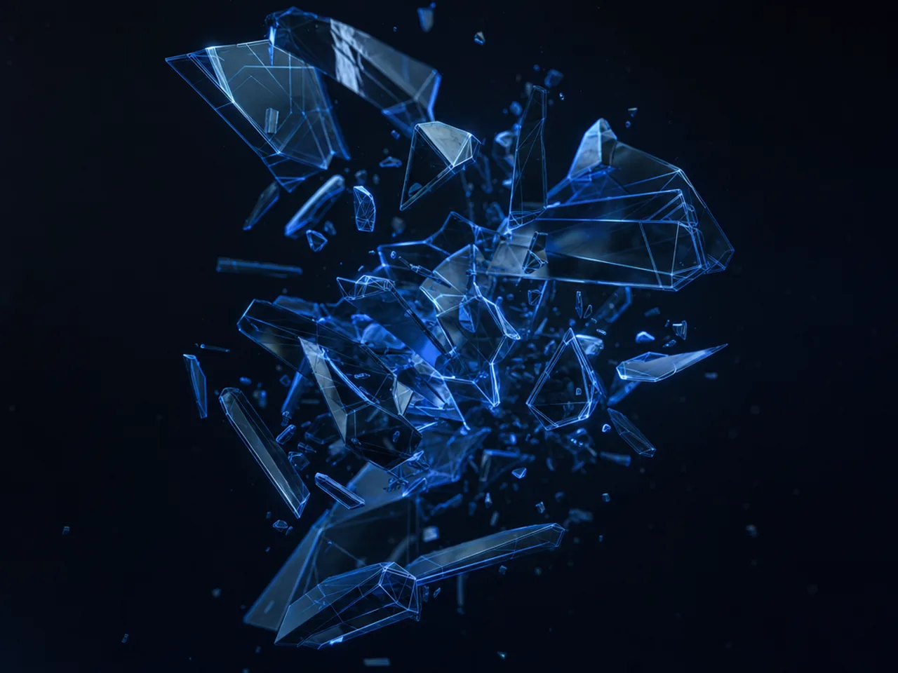
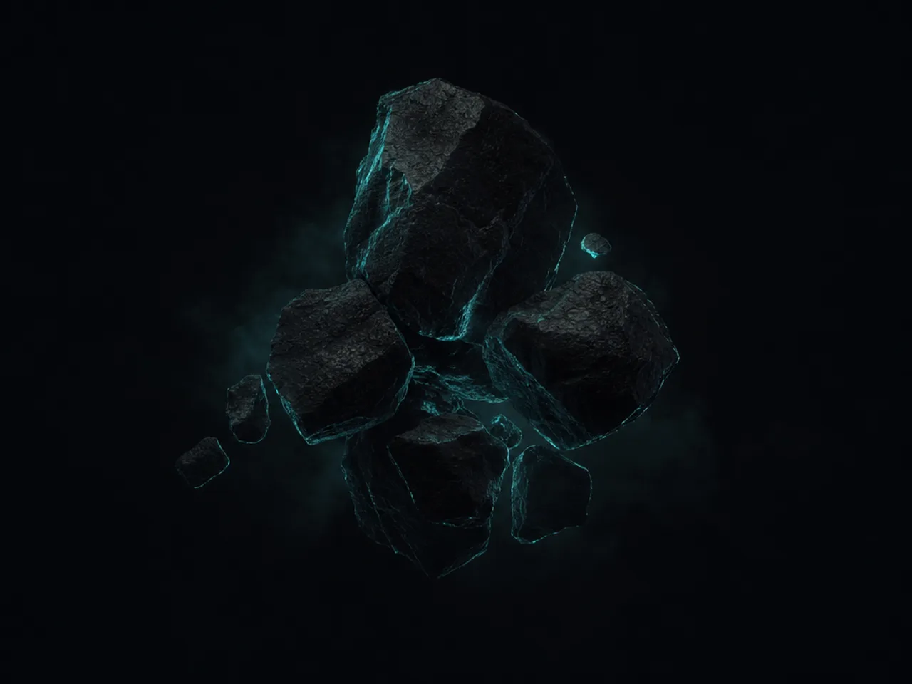
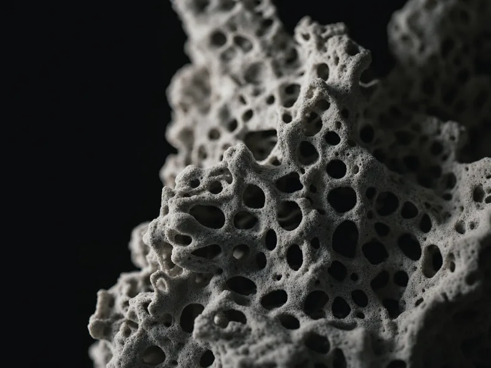
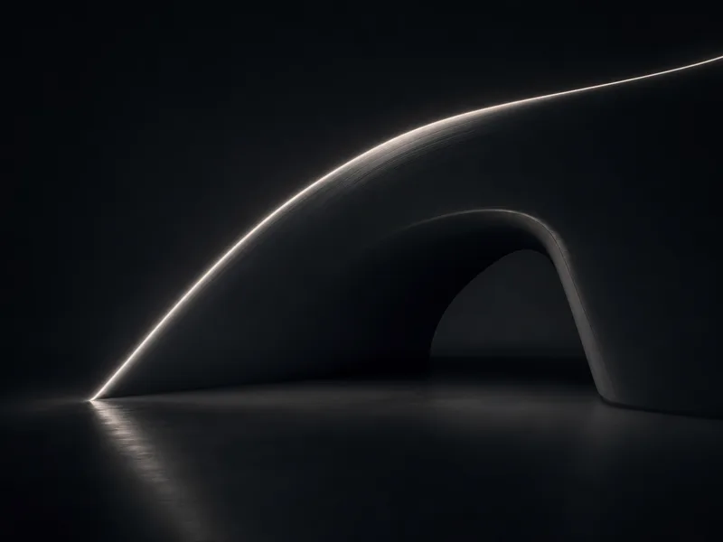
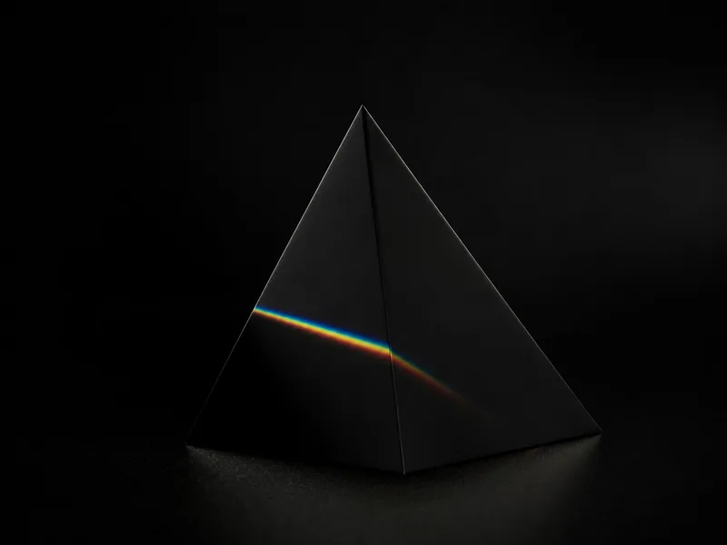
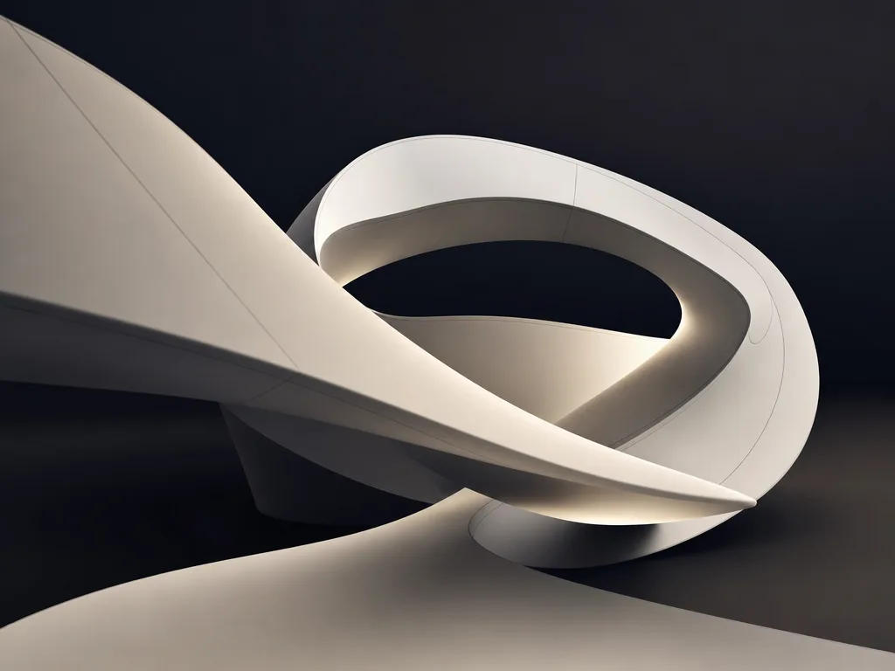
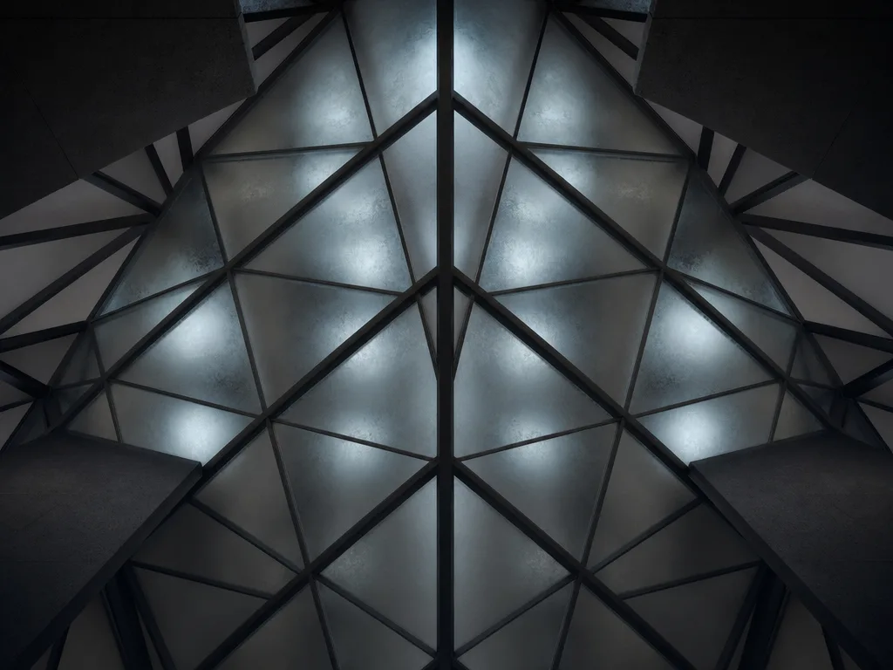

01
WEB SITE DESIGN
→伝わるだけでなく、進ませるサイトへ。
コーポレートサイト、ランディングページ、オウンドメディア、ECサイト、UI/UX設計。見た目の印象だけでなく、ユーザーが情報へたどり着き、行動へ進むための構造を設計します。
AXIS — Integrated Web Marketing Company
勝ち筋の軸を、つくる。
Webサイト。広告。映像。3DCG。
点で動いていた施策を、ひとつの戦略へ。
AXISは、事業の課題を読み解き、
伝えるべき価値を設計し、
成果につながるクリエイティブへ変えていく会社です。
美しさだけで終わらせない。
数字だけで語らない。
ブランドの熱と、マーケティングの精度を、
同じ軸で動かす。
ユーザーが何を見て、何を感じ、どこで迷い、いつ動くのか。
成果の裏側には、必ず構造があります。
AXISがつくるのは、ただの広告でも、ただのサイトでもありません。
問いを立て、仮説をつくり、形にし、数字で磨く。
その循環を、戦略・制作・運用のチームで一気通貫します。
感覚を、設計へ。
設計を、成果へ。
AXISは、Webに必要な機能を分断せず、
プロジェクトに必要なチームを組み上げます。

伝わるだけでなく、進ませるサイトへ。
コーポレートサイト、ランディングページ、オウンドメディア、ECサイト、UI/UX設計。見た目の印象だけでなく、ユーザーが情報へたどり着き、行動へ進むための構造を設計します。
届け方まで設計して、売れる理由をつくる。
SNS広告、リスティング広告、SEO、ブランディング広告。媒体を運用するだけではなく、誰に、何を、どの順番で届けるかを組み立てます。
クリエイティブと運用データを接続し、仮説検証を重ねながら、成果の確度を上げていきます。

情報を、体験に変える。
映像、3DCG、アニメーション、バーチャルWebサイト。言葉や静止画だけでは届きにくい世界観を、動きと空間で立ち上げます。
広告、ブランド表現、メタバース、AR/VR、Web体験まで。記憶に残る接点を設計します。
感覚だけに頼らず、過去のデータ、運用結果、市場の動きをもとに仮説を組み立てます。毎月500件以上のクリエイティブ制作と、社内運用チームによる分析体制で、成果に近い提案へ磨き込みます。
企画、制作、運用が別々に進むと、成果の軸はぶれます。マーケター、解析士、ディレクター、デザイナー、エンジニア、コピーライター、映像編集者、3DCGクリエイターなどの専門人材を組み合わせて動きます。
公開、配信、納品はゴールではありません。そこから得られる反応を読み、改善し、次の一手へつなげる。制作と運用を接続することで、クリエイティブを成果に近づけます。
見栄えのための過剰な提案ではなく、事業に必要なものを見極める。予算、目的、フェーズに合わせて、最短距離で成果へ向かう設計を行います。

まず、事業の奥にある熱を聞く。
要望だけでなく、背景、競合、顧客、現場の違和感まで拾い上げ、プロジェクトの芯を見つけます。
市場とユーザーの動きを読む。
トレンド、競合、検索行動、広告反応、既存データを分析し、思い込みではなく勝ち筋の仮説を組み立てます。
伝えるべき価値を定義する。
誰に、何を、どんな順番で伝えるのか。コンセプト、訴求、デザイン方向、媒体戦略を定めます。

体験の骨格を設計する。
サイト構造、導線、ワイヤー、コピー、映像構成、広告設計。情報と感情の流れを組み立てます。

形にする。強度を持たせる。
デザイン、実装、映像、3DCG、広告クリエイティブを制作し、ブランドの空気感と成果に必要な機能を両立させます。
数字を読み、進化させる。
広告運用、保守、改善提案を通じて、成果の最大化を目指します。公開後も、クリエイティブは成長し続けます。
サービスサイト、広告LP、ブランドムービー、広告運用まで。立ち上げ期に必要な認知と獲得の導線をまとめて設計します。
サイト改善、SEO、広告運用、LP制作、クリエイティブ改善。ユーザーが来る理由、選ぶ理由、申し込む理由をつくります。

コーポレートサイト、ブランドコピー、ロゴ、映像、3DCG表現。言葉とビジュアルの両面から、印象の軸を再設計します。

戦略、制作、運用を同じチームで動かすことで、意思決定を速くし、改善の精度を上げます。
3DCG、バーチャルWeb、インタラクティブ表現を活用し、見るだけではなく、触れたくなるブランド体験を設計します。
いいクリエイティブとは、きれいなものではなく、動かすものだと思う。
心を動かす。判断を動かす。数字を動かす。事業を動かす。
AXISは、表現の奥にある構造を見ます。数字の奥にある人間を見ます。ひとつの施策ではなく、ひとつの軸をつくり、事業が前へ進む理由を設計します。
ABOUT AXIS⟶AXISは、ひとりの万能さよりも、それぞれの尖りが交差するチームを信じています。
得意なことを、もっと強く。足りないところは、仲間と補い合う。成果に向かって、本気で考え、本気で動く人と働きたいと考えています。
採用情報を見る⟶Webサイトを変えたい。広告の成果を伸ばしたい。ブランドの見え方を整えたい。映像や3DCGで新しい体験をつくりたい。
まだ言葉になっていない段階でも、構いません。課題の輪郭をつかむところから、AXISが伴走します。
Your business has a next axis.
We design it.